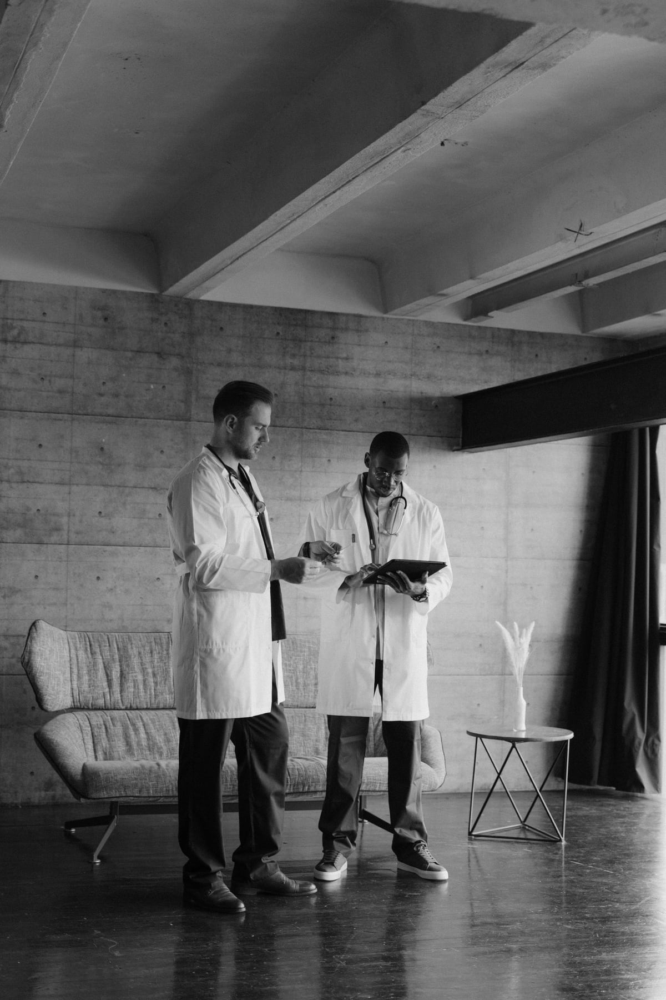

A movement became a voice. A voice became a society.
From shared challenge to a national professional society
This is the high-level story of how international doctors came together, carried their experience into public life, helped move reform forward, and built IAID for the chapters still to come.
Begin the journey
A need that could no longer remain individual
International Medical Graduates were making an essential contribution to healthcare in Ireland while facing recurring barriers that shaped careers, families, and a sense of professional belonging.
What first appeared as separate experiences gradually revealed a shared pattern. Training access, immigration stability, professional recognition, workplace dignity, and representation were connected—and they required a collective voice.
The question changed from “How do I navigate this?” to “How do we change it together?”
A movement steps into public life
Train Us For Ireland gave those shared experiences a public form: campaigns, open letters, petitions, media engagement, professional dialogue, and sustained work with stakeholders.
The aim was not simply to be heard. It was to turn lived experience into clear, constructive calls for change—and to keep those calls visible long enough for reform to move.
Explore the campaign record
Reform became visible in real lives
The full record is broader, but three moments show the direction of travel: opening routes to training, widening equality of access, and creating greater employment stability.
- Training access
A legal barrier was removed
Eligible non-EEA-qualified doctors could pursue Trainee Specialist Division registration and compete for postgraduate training.
- Equal opportunity
Stamp 4 access widened
Stamp 4 holders joined Irish, EU, and UK candidates in the first allocation group for available specialist training places.
- Stability
A clearer route to Stamp 4
Eligible non-EEA doctors could request Stamp 4 support after 21 months, alongside immediate working rights for spouses or partners.
These are selected story moments, not the complete achievement record.
See every major achievementThe voice gained a lasting professional home
IAID emerged to carry the movement’s experience into a formal professional society—with a broader structure for support, education, representation, research, leadership, and community.
The change was an evolution, not an ending: from campaigning around urgent barriers to building the relationships and institutions that help international doctors contribute, progress, and belong.
Represent doctors with professionalism, evidence, and constructive engagement.
Share practical knowledge, professional learning, mentorship, and development.
Build community across counties, careers, specialties, and stages of arrival.
The next chapter is being written now
Today, IAID combines a long advocacy memory with an active programme of professional learning, peer support, community connection, and public representation.
Newly arrived doctors meet an organisation shaped by those who came before them—and open to those who will shape what follows.
News, events, and professional milestones
The story belongs to every doctor who helped move it forward.
Discover the complete campaign and achievement record, or connect with the professional community carrying the work into its next chapter.